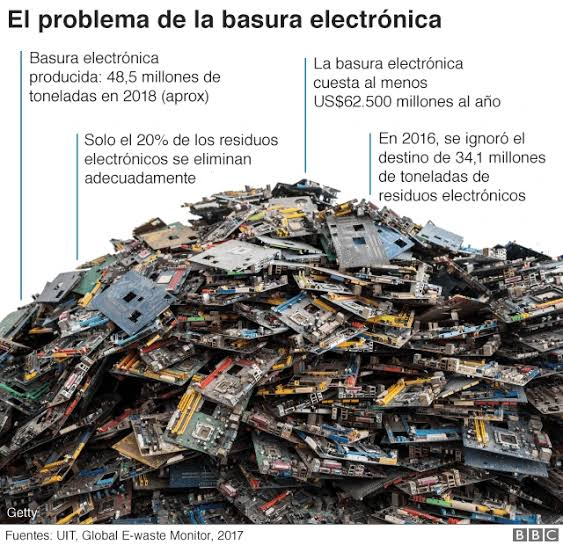
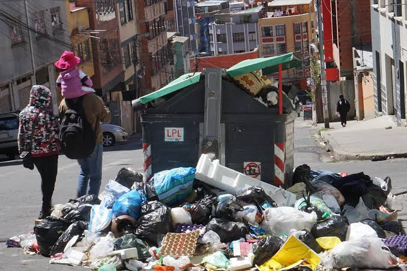

nvestigación 1: Gestión municipal de residuos sólidos en La Paz (2018). Autores: Navarro Ferronato, M. A. Gorritty Portillo, E. G. Guisbert Lizarazu, V. Torretta, M. Bezzi y M. Ragazzi. Esta investigación analizó la gestión municipal de residuos en La Paz utilizando información correspondiente a 2016. Estudió aspectos como la recolección, el reciclaje y la sostenibilidad del sistema. Sus resultados señalaron dificultades en la recuperación de materiales y en la organización de la gestión municipal. Enlace: https://doi.org/10.1177/0734242X18755893 Investigación 2: Economía circular y gestión de residuos sólidos en La Paz (2022). Autores: Navarro Ferronato y colaboradores. El estudio examinó iniciativas de reciclaje, recuperación de materiales y cooperación institucional desarrolladas en La Paz. Analizó cómo los proyectos de economía circular pueden contribuir al aprovechamiento de residuos y qué dificultades pueden limitar su continuidad. Enlace: https://doi.org/10.3390/su14031412 Investigación 3: Avances en la gestión de residuos sólidos en la ciudad de La Paz (2020). Autor: Oscar M. Vidaurre Espinoza. Esta investigación estudió los avances y las dificultades de la gestión de residuos mediante encuestas, entrevistas y observaciones de campo. Su metodología sirve como referencia para investigar la acumulación de basura y los hábitos de la población en diferentes sectores de la ciudad. Enlace: https://ojs.umsa.bo/index.php/revigeo/article/view/482 Investigación 4: Reciclaje de residuos sólidos en la ciudad de La Paz (2022). Autor: Oscar Moisés Vidaurre Espinoza. El trabajo analizó la situación del reciclaje en La Paz y las dificultades relacionadas con la recuperación de materiales. Destaca la importancia de mejorar la coordinación entre la población, los recicladores y las instituciones encargadas de la gestión de residuos.
